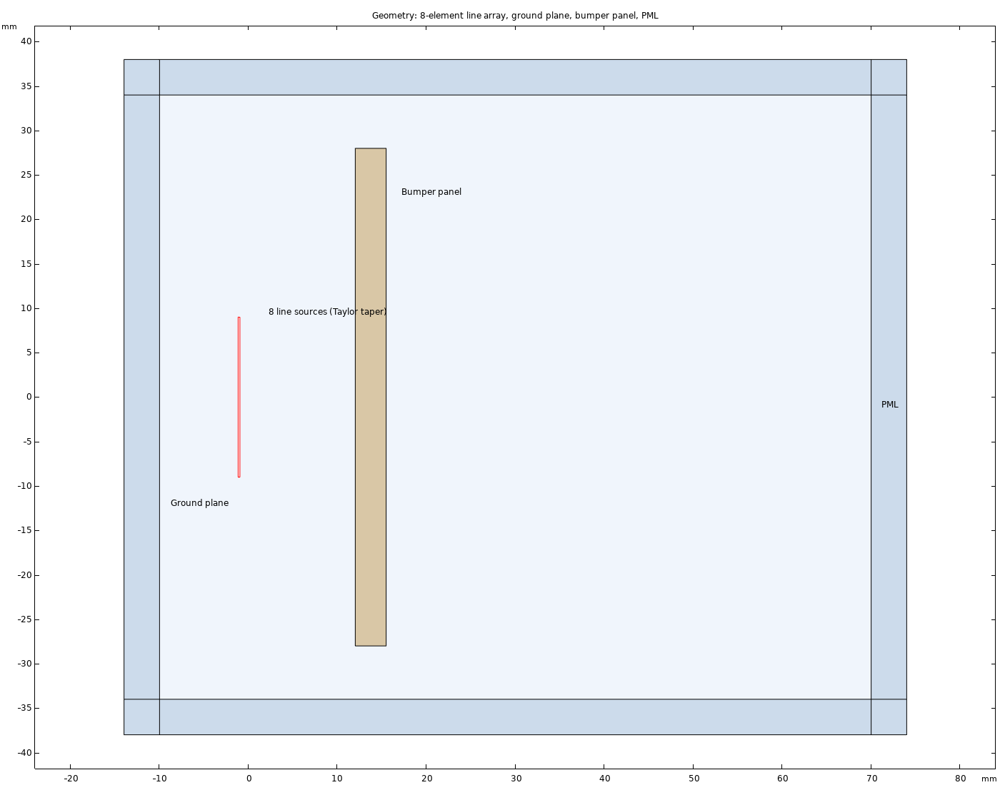
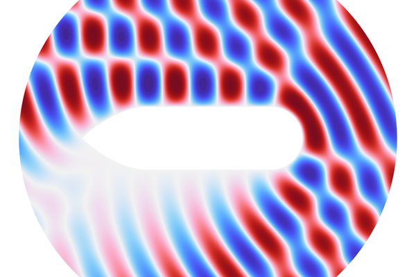
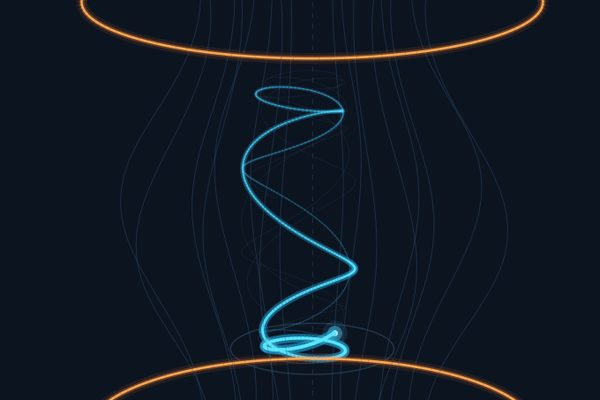
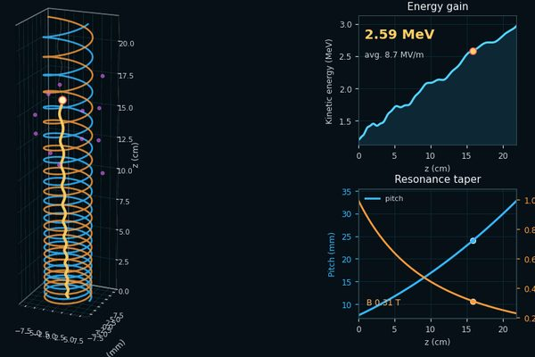

סימולציה אלקטרומגנטית · אנטנות · מכ״ם
סימולציות אלקטרומגנטיות: אנטנות, התפשטות גלים ומכ״ם
סימולציה אלקטרומגנטית מראה איך גל מתפשט במבנה, באנטנה, בדירה או מאחורי פגוש של רכב, עוד לפני שהמבנה קיים. רוב המודלים בדף נבנו ב‑COMSOL Multiphysics (קומסול), ובעבודות שפורסמו השתמשתי גם ב‑CST Studio Suite. את העיבוד והניתוח אני עושה ב‑MATLAB וב‑Python, ובמידת האפשר משווה את התוצאות למדידות בחדר האל־הד של המעבדה.
Wi-Fi בדירה עם ממ״ד

מודל דו־ממדי של דירה בגודל 10 × 8 מ׳ עם ממ״ד מבטון מזוין, דלת הדף ותריס פלדה, וחומרי בנייה לפי ITU-R P.2040-4. השדה נפתר פעמיים, עם דלת הממ״ד פתוחה ועם דלת סגורה.
- בממ״ד הרמה הממוצעת נמוכה מהסלון ב־12 dB כשהדלת פתוחה וב־32 dB כשהיא סגורה
- 3.6 מיליון דרגות חופש בכל מצב דלת
אנטנת קרן עם עדשה ממקדת ב־10 GHz


אנטנת קרן קונית מודפסת בתלת־ממד עם עדשת PTFE דו־קמורה, מתוך עבודה שפורסמה ב‑Electronics ב־2025. העדשה הופכת את חזית הגל המתבדרת של הקרן לחזית מתכנסת ומרכזת את ההספק בכתם קטן מול האנטנה.
- רוחב הכתם במוקד (חצי הספק): כ־27 מ״מ, 0.89 אורך גל
- המוקד במדידה ובסימולציה: כ־67 מ״מ מהמשטח הקדמי של העדשה, כ־100 מ״מ מעבר לפתח הקרן
אנטנת ויוואלדי אנטיפודלית רחבת־סרט

אנטנה על לוח Rogers RO4003C בגודל 60 × 70 מ״מ, שתוכננה ליעד תדר תחתון של 3 GHz. המודל תלת־ממדי וכולל פורט הזנה, שכבות PML וחישוב שדה רחוק.
בסימולציה:
- הפסד החזרה של 10 dB לפחות מכ־3.6 GHz ועד סוף הסריקה ב־12 GHz, פרט לתחום צר סביב 5 GHz שבו הוא יורד לכ־9 dB
- הגבר ממומש בכיוון הקרינה: 8.3 עד 9.1 dBi בין 6 ל־11 GHz
מכ״ם רכב ב־77 GHz מאחורי פגוש

מערך של 8 מקורות משדר דרך לוח פגוש מתערובת פוליפרופילן, ועובי הלוח משתנה מ־1 עד 4 מ״מ. כשהעובי הוא כפולה של חצי אורך גל בחומר, ההחזר מהלוח קרוב לאפס. בעובי אחר חלק מההספק חוזר אל המכ״ם. המודל דו־ממדי.
- העברה מרבית בעובי 1.16, 2.32 ו־3.48 מ״מ
- עד 22% מההספק מוחזר בעובי לא מותאם (גל ניצב)
- על לוח בעובי 3.48 מ״מ שכבת צבע מטאלי מעלה את ההחזר לכ־40%. בעובי 1.98 מ״מ ההפסד של הלוח הצבוע הוא 0.87 dB
מיקרו־דופלר של רחפן ב־94 GHz
סימולציה של אות מכ״ם CW בתדר 94 GHz המוחזר מרחפן בעל ארבעה רוטורים. כל להב מיוצג כשורה של מפזרים נקודתיים, והמודל נכתב ב‑Python. בכל פעם שלהב חוצה את הניצב לקו הראייה של המכ״ם, נוצר בספקטרוגרמה הבזק אנכי שגובהו נקבע מתדר הדופלר של קצה הלהב.
- הבזקי הלהבים מגיעים עד 45 kHz לכל צד של קו הגוף
- הבזק אחד לכל רוטור כל 5.5 עד 6.5 ms
- מסרק קווים ספקטרליים (HERM) לכל רוטור, במרווחים של 155, 164, 170 ו־181 Hz
סימולציות נוספות באתר

שטח חתך מכ״ם (RCS)
פיזור גל מישורי ממטרה, מודל COMSOL

מלכודת מראה מגנטית
מסלול אלקטרון בין שתי עדשות מגנטיות (באנגלית)

מאיץ IFEL קומפקטי
האצת אלקטרון באונדולטור סלילי בעזרת גל טרה־הרץ, מודל COMSOL (באנגלית)
מגנטיות שימושית
מודלים מגנטוסטטיים ב‑COMSOL של אונדולטורים ממגנטים קבועים ומפות שדה מגנטי